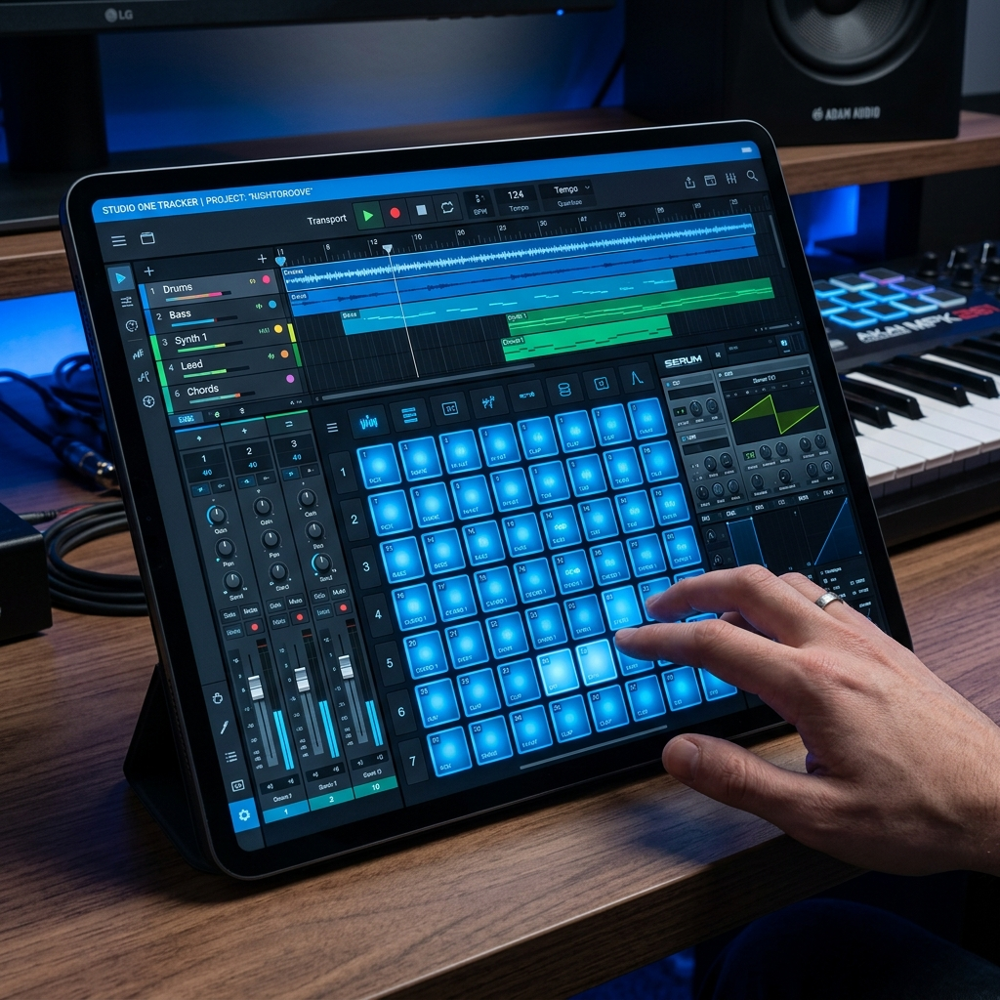
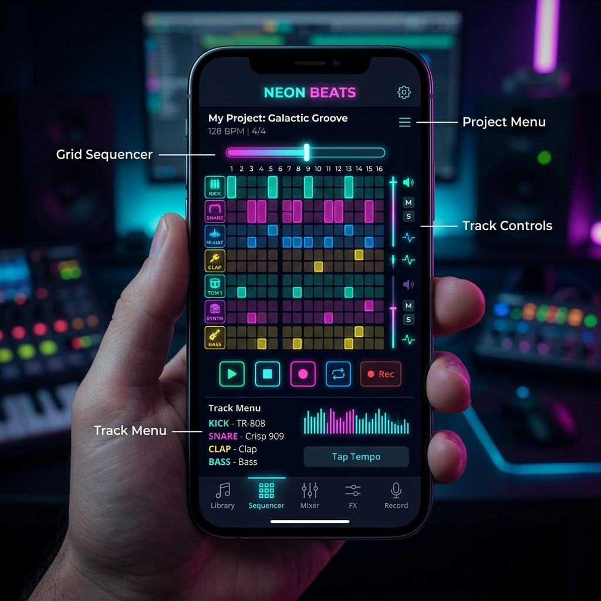
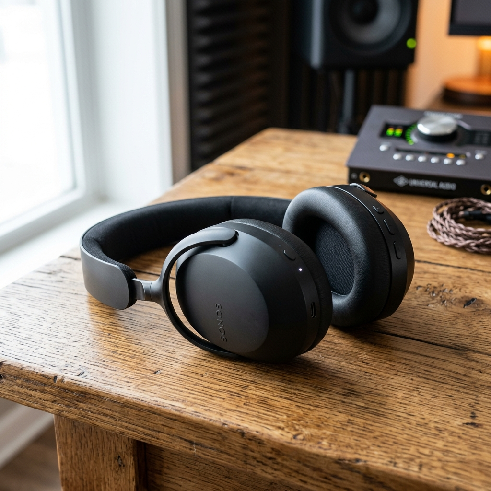

Latest AI Music News
Stay ahead of the curve with the freshest updates from the intersection of artificial intelligence and the music industry.
Industry Trends

The Revolution of AI in the Music Industry
The music industry is undergoing its most significant transformation since the invention of digital recording. The emergence of generative AI has opened doors that were previously locked behind expensive studio fees and years of technical training. Today, ai music isn't just a gimmick—it's a fundamental part of the creative process for thousands of producers.
From independent artists to major record labels, everyone is looking for the best ai music generator free of cost to streamline their workflow. Tools like MusicMakerAI are leading this charge by providing professional-grade synthesis that allows anyone to generate ai-generated music in high fidelity.
Try our AI Studio →
Product Spotlight


Why MusicMakerAI is the Best AI Music Generator Free in 2026
In a saturated market, finding the best ai music generator free of restrictive paywalls can be a challenge. While many platforms offer basic loops, musicmakerai provides a comprehensive suite of tools for melody generation, beat making, and multi-instrument arrangement.
Unlike other ai music platforms that often feel like black boxes, our generative AI engine works with you. You can follow our guide to understand how each notation block creates complex soundscapes. This transparency is why MusicMakerAI has become a staple for creators who want to maintain artistic control over their ai-generated music.
Start Creating for Free →
Record Labels
AI Music and Record Labels: A New Era of Collaboration
Recent ai music news suggests that major record labels are no longer viewing AI as a threat, but as a powerful collaborator. Generative AI is being used to create demos, find new rhythmic patterns, and even restore historical recordings. The integration of ai-generated music into mainstream catalogs is growing at an exponential rate.
Platform like MusicMakerAI are at the forefront, providing the tools that bridge the gap between human creativity and machine intelligence. Whether you are a bedroom producer or a scout for top record labels, our platform offers the versatility needed to succeed in the modern music industry.
Explore the Music Hub →
Technical Guide
Under the Hood: How MusicMakerAI Generates Pro Sound
Understanding how musicmakerai works is key to mastering ai-generated music. As detailed in our documentation, the tool uses a unique block-based notation system powered by high-performance audio engines. This allows for precise control over pitch, timing, and instrument selection.
Each snippet of music is represented by a "Note Block" like pc120,. Here is a breakdown of how the best ai music generator free version processes your input:
- • Instrument Prefix: 'p' for Piano, 'g' for Guitar, 'v' for Violin, and 'd' for Drums.
- • Musical Note: The standard note (A-G) or drum index (1-12).
- • Smart Tempo: The numeric value in each block ensures every note stays perfectly in sync with your global tempo setting.
By using this structured approach, MusicMakerAI ensures that your ai music compositions are not just random sounds, but musically coherent tracks ready for the music industry.
Read Full Technical Docs →
Ready to shape the future of sound?
Join the MusicMakerAI community and start your journey with the best ai music generator free today.
Launch AI Music Studio